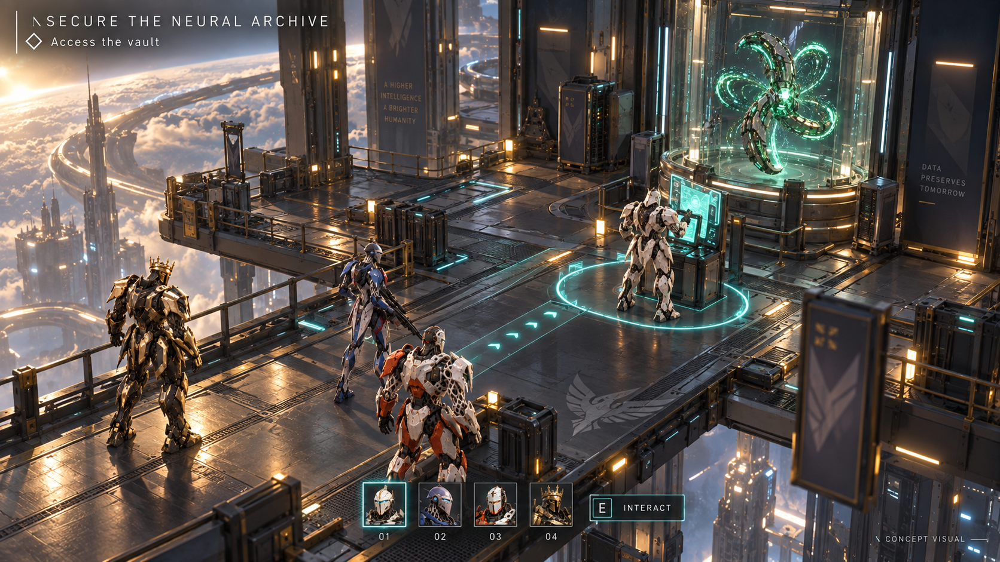
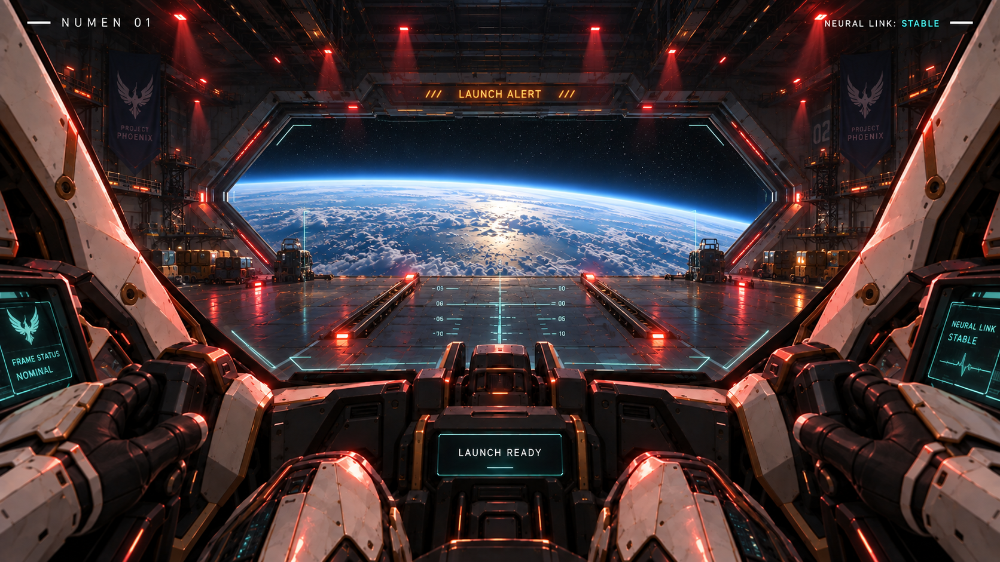
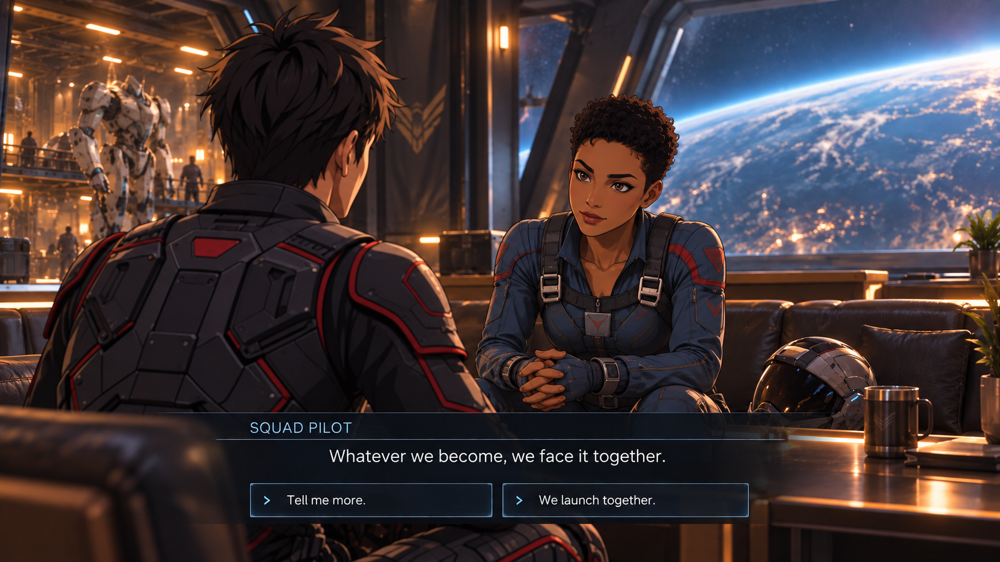
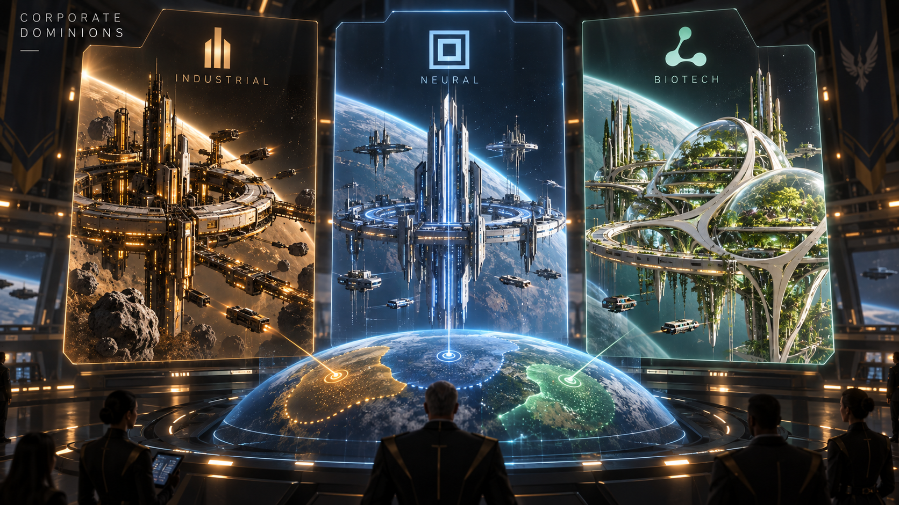
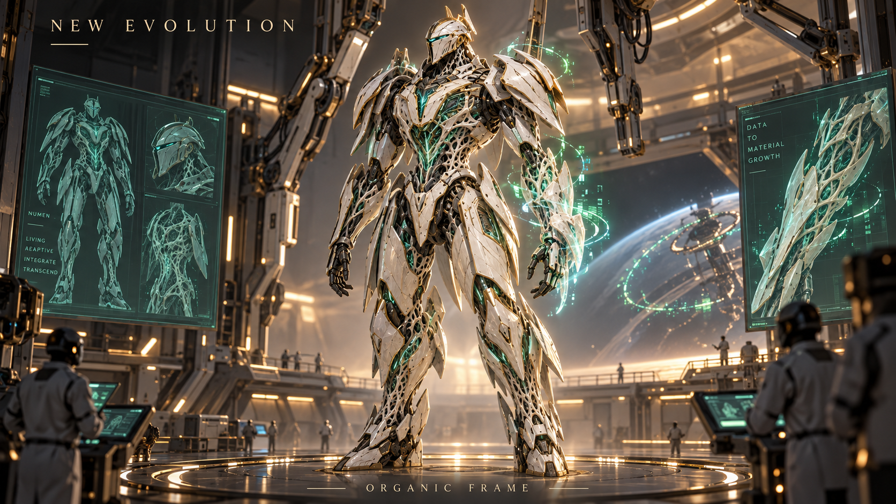
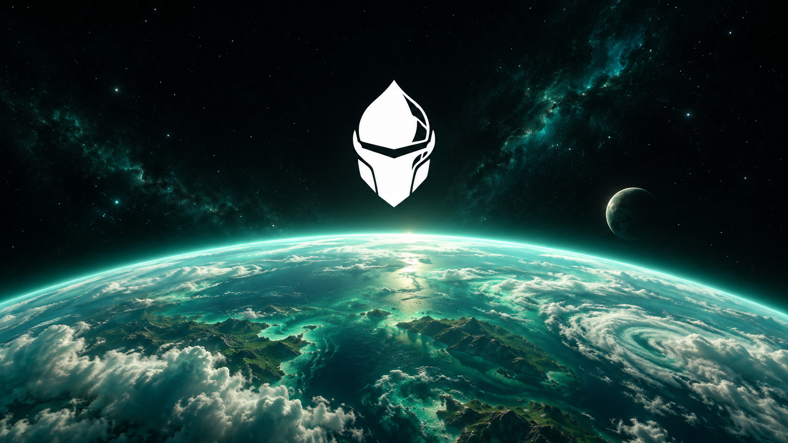

Your squad.
Your evolution.
Your next horizon.
Four pilots. Living machines. Knowledge that changes everything.
EXPLORE THE GAME ↓A frame that remembers.
Lost from Earth, find a new beginning with a living machine.

Beyond the familiar.
Explore ground, water and space. Bring back knowledge from each.

Four Numens. One squad.
Combine your pilots’ strengths. Adapt your team to every mission.

The next horizon awaits.
Connect with your Numen. Step into the unknown.

Make every move count.
Use cover, coordinate abilities and outthink your opponents.

Discover your next evolution.
Recover Neural Artefacts on your missions.

Knowledge, given form.
Vast neural archives. The power to reshape your Numen.

Link. Adapt. Evolve.
Drag an artefact onto your frame to unlock a new form.

Become something greater.
New wings. New abilities. A silhouette shaped by your choices.

A home among the stars.
Expand your hangars, workshops and crew quarters.

The people inside.
Discover your pilots’ stories through collectible manga and visual novels.

Different futures. Shared fears.
Meet civilizations and corporations fighting for their own tomorrow.

Evolution has no single path.
Discover technology that transforms armor into living structure.


{kind=link}